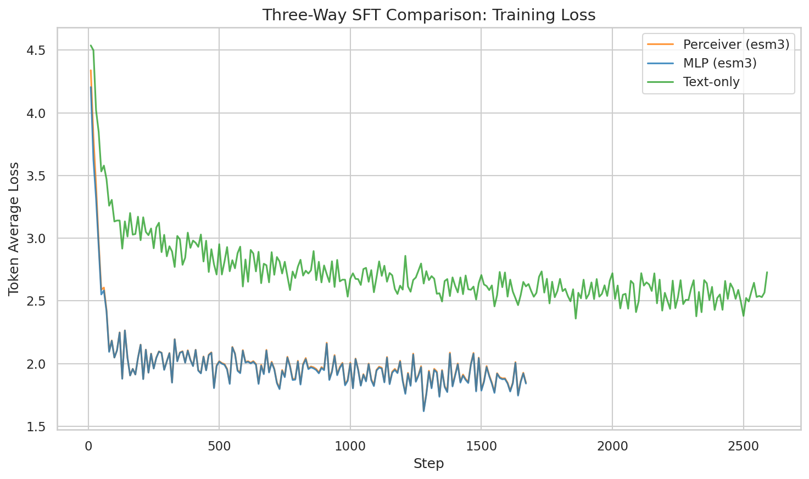
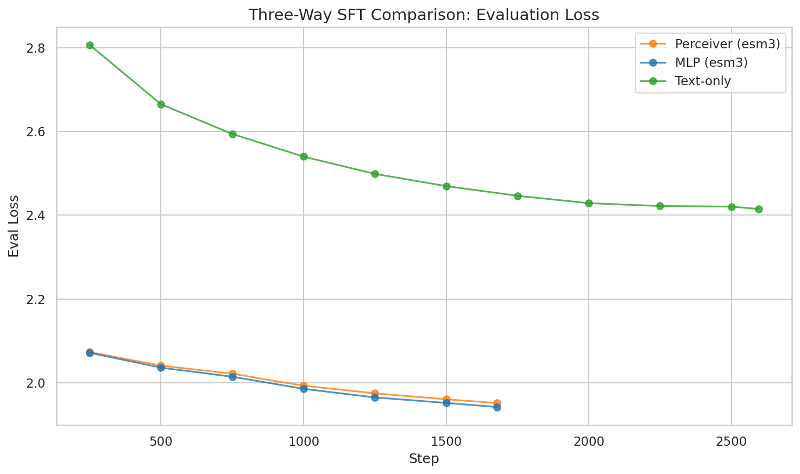
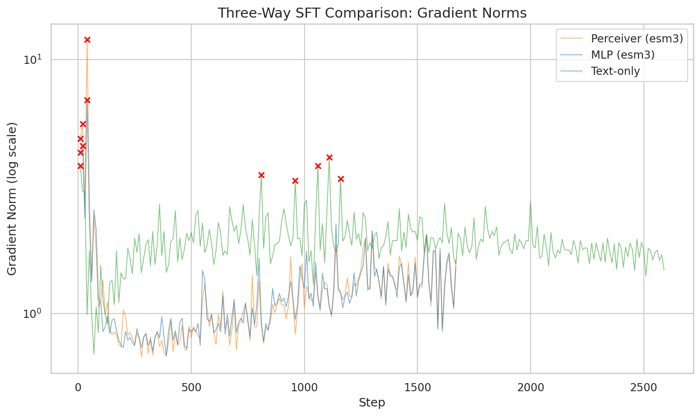
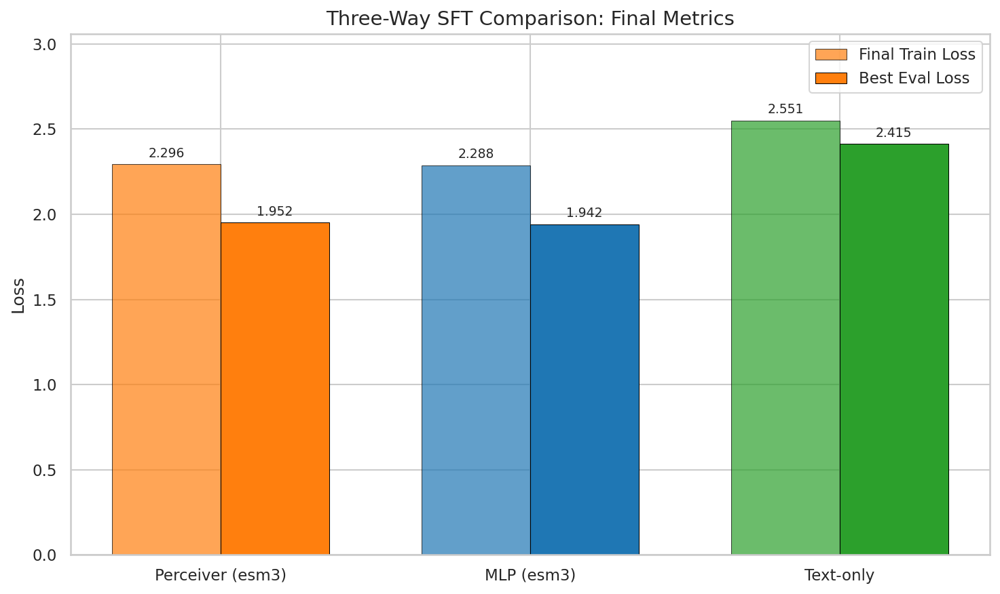
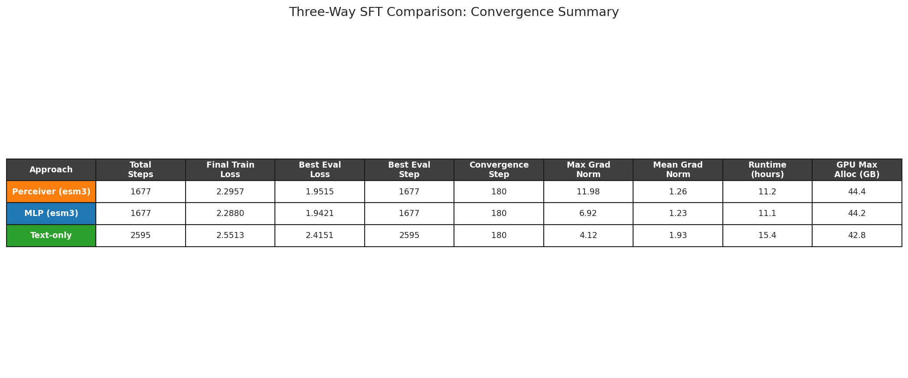

The three-way comparison is complete. MLP projector, Perceiver Resampler, and text-only baselines have all trained on the same Qwen3-8B backbone, same Mol-Instructions dataset, same learning rate. The training metrics tell one story; the generated text tells another.
Both ESM-3 encoder approaches achieve ~20% lower eval_loss than text-only (MLP: 1.942, Perceiver: 1.952, Text: 2.415). But when we look at what the models actually generate, text-only produces better outputs -- exact catalytic reaction matches, diverse protein sequences, and coherent functional descriptions that neither encoder variant can match. Lower loss does not mean better generation.
Methodology
- Data source: wandb run histories + local trainer_state.json
- Loss metrics: token_avg_loss (true per-token average, not HF Trainer running average); eval_loss (validation set)
- Generation evaluation: 25 samples per checkpoint (5 categories x 5 samples), logged to wandb tables at every 250 steps
- Experiments: 3 runs, Feb 25 -- Feb 28, 2026
- Approach comparison: ESM-3+MLP vs ESM-3+Perceiver vs text-only, all on Qwen3-8B
Experiment Configuration
| Parameter | MLP (ESM-3) | Perceiver (ESM-3) | Text-Only |
|---|---|---|---|
| Experiment | sft_lora_esm3_qwen3_8b_it_0226_151416 |
sft_lora_esm3_qwen3_8b_it_0225_203237 |
sft_text_qwen3_8b_it_0227_145821 |
| Approach | esm3 (frozen) + MLP | esm3 (frozen) + Perceiver | text tokens |
| Projector | AttentionPooling (32 tokens) + MLP (1536->5120->2560) | PerceiverResampler (1536->1024->2560, 2 layers) | -- |
| Base LLM | Qwen/Qwen3-8B (LoRA r=8) | Same | Same |
| Base LR / Projector LR | 2e-4 / 1e-3 | 2e-4 / 1e-3 | 2e-4 / -- |
| Epochs | 3 | 3 | 3 |
| Total steps | 1,677 | 1,677 | 2,595 |
| Training time | 11.05h | 11.25h | 15.41h |
| Peak GPU memory | 44.19 GB | 44.41 GB | 42.82 GB |
Training Metrics
Loss Curves
Both ESM-3 approaches converge to substantially lower token_avg_loss than text-only. MLP reaches a minimum of 1.620 and Perceiver 1.627, while text-only bottoms out at 2.359 -- a 31% gap. The two encoder curves are nearly indistinguishable from each other throughout training.

All three runs converge rapidly in the first 180 steps during the warmup phase. After that, the encoder approaches continue a gradual descent while text-only settles at a higher floor. The gap between ESM-3 variants and text-only is visible from step 50 onward and never closes.
Validation Loss
Eval loss confirms the training pattern: MLP reaches best eval_loss of 1.942 at step 1,677, Perceiver reaches 1.952 at step 1,677, and text-only reaches 2.415 at step 2,595. The MLP vs text-only gap is 19.6%; Perceiver vs text-only is 19.2%. MLP edges out Perceiver by only 0.48%.

All three curves are still decreasing at their final steps, suggesting further training could improve each. The encoder approaches level off faster, with diminishing returns after step ~1,000.
Gradient Dynamics
The Perceiver shows the largest early gradient spikes (max 11.98 at step 40), followed by MLP (max 6.92), and text-only (max 4.12). This reflects the challenge of training randomly-initialized multimodal projectors -- the Perceiver's cross-attention mechanism produces particularly large error signals before it learns useful attention patterns.

After step ~200, MLP and Perceiver settle into a mean gradient norm of 1.23-1.26, while text-only runs higher at 1.93. Text-only also shows periodic gradient spikes around steps 800--1,200 that the encoder approaches do not exhibit.
Generation Quality Analysis
This is the key finding. Despite 20% lower eval_loss, the ESM-3 encoder approaches produce worse generation quality across nearly every task category.
Catalytic Activity Prediction
The most dramatic difference appears in catalytic reaction prediction, where models must identify the specific chemical reaction catalyzed by a given protein. Text-only gets exact or near-exact matches; both ESM-3 variants collapse to fixed outputs.
Perceiver (step 1,677) -- produces the same reaction for 3 out of 5 different proteins:
"ATP + L-tyrosyl-[protein] = ADP + H(+) + O-phospho-L-tyrosyl-[protein]"
This is a tyrosine kinase reaction, output regardless of whether the input protein is a dehydroquinate synthase, a nucleoside phosphorylase, or an exonuclease.
MLP (step 1,677) -- produces varied but incorrect reactions. Each output is unique, but none match the expected reaction. For example, given a nucleoside phosphorylase, MLP outputs a tRNA modification reaction instead.
Text-only (step 2,595) -- achieves exact matches:
- Sample 2: correctly outputs phosphate + xanthosine = alpha-D-ribose 1-phosphate + xanthine (exact match)
- Sample 5: correctly outputs ATP + H2O = ADP + H(+) + phosphate (exact match)
- Sample 3: predicts a related nuclease reaction (close but not exact)
Protein Design (Sequence Generation)
Design tasks ask the model to generate a novel protein sequence given functional requirements. Here all three approaches struggle, but the failure modes differ sharply.
Perceiver -- degenerates to single amino acid repetitions. 4 out of 5 design outputs are pure repetition:
SDSDSDSDSDSDSD...(300+ characters)
SSSSSSSSSSSSSS...(300+ characters)
MLP -- produces a memorized stock sequence prefix. All 5 design outputs start with the same signal peptide:
MSSKQVYRLLGGLLALFSLAAGSAAE...
The sequences vary after the first ~30 characters but share a common beginning that is unconditioned on the input instruction.
Text-only -- generates diverse, full-length sequences (~300 characters) with varied content. While none match the expected output exactly (which is expected for open-ended generation), each output is distinct and contains recognizable protein-like motifs:
MSTQQVIVGVTGGIGSGKTTLAAALKGLGLE...(330 chars, sample 4)
MRLTVQVLLDQLLADGKAVLVAGPGSGIGE...(350+ chars, sample 3)
Domain/Motif Prediction
Perceiver collapses to a single domain prediction across all 5 inputs: "YjeF N-terminal domains" -- regardless of whether the actual protein contains cyclodiphosphate synthase, glutamine amidotransferase, or shikimate dehydrogenase domains.
MLP also predicts "YjeF N-terminal domains" for 4 out of 5 domain samples, with only 1 correct prediction (ATP binding for a protein expected to have DNA binding function).
Text-only correctly predicts 3 out of 5 domain/motif tasks:
- Exact match on 2-C-methyl-D-erythritol 2,4-cyclodiphosphate synthase
- Correct glutamine amidotransferase identification
- Exact match on shikimate dehydrogenase domains
Function Description
For protein function description, text-only achieves a near-exact match on the FAD-binding monooxygenase sample (including correct subcellular localization to ER membrane), while both ESM-3 variants produce generic descriptions about ATP binding or coenzyme A biosynthesis that do not match the input protein.
Quality Metrics Summary
| Metric (final step) | Baseline* | MLP | Perceiver | Text-Only |
|---|---|---|---|---|
| Avg word overlap with expected | 0.033 | 0.346 | 0.296 | 0.443 |
| High-similarity samples | 0/20 | 4/25 | 3/25 | 5/25 |
| Degenerate outputs | 0/20 | 3/25 | 6/25 | 5/25 |
| Unique generation starts | 17/20 | 18/25 | 19/25 | 16/25 |
| Avg generation length (chars) | 1009 | 179 | 220 | 319 |
| Mode-collapsed categories | 0 | 0 | 2 (catalytic, domain) | 1 (catalytic) |
*Baseline = Qwen3-8B with no fine-tuning. Evaluated on 20 samples (4 categories; protein design excluded). All SFT runs evaluated on 25 samples (5 categories).
The baseline model (no SFT) achieves only 0.033 avg word overlap -- essentially zero task performance. It produces long, verbose outputs (1009 chars avg) that are fluent but entirely irrelevant to the protein task. No degenerate outputs, but also no correct answers. All three SFT approaches dramatically improve over baseline: text-only achieves 13.4x higher word overlap (0.443 vs 0.033), MLP 10.5x (0.346), and Perceiver 9.0x (0.296). This confirms SFT is essential -- the base LLM has no protein understanding out of the box.
Among SFT approaches, text-only achieves the highest word overlap with expected outputs (0.443 vs 0.346 for MLP and 0.296 for Perceiver) despite its 20% higher eval_loss. Its generations are also 78% longer on average (319 vs 179 chars), indicating richer and more detailed outputs.
Quality Over Training Steps
Generation quality does not consistently improve with more training. Text-only peaks around step 500--750 (avg word overlap 0.497) then fluctuates between 0.43 and 0.47 through the remainder of training. Perceiver oscillates between 0.225 and 0.348, with degenerate output counts spiking at steps 250, 1000, 1500, and 1677 (6-7 degenerate samples each time). MLP shows a slight upward trend from 0.303 to 0.346 but remains below text-only at every checkpoint.
The eval_loss Paradox
Why does 20% lower eval_loss translate to worse generation quality? Three hypotheses:
1. The encoder provides a shortcut for loss without grounding generation. ESM-3's embeddings encode structural and functional information that helps the model predict common tokens in the training distribution (lowering per-token loss), but this information may not transfer to the conditional generation process. The LLM learns to "read" the encoder signal to predict likely continuations, without learning protein-specific content that would help it generate accurate, diverse responses.
2. The projector bottleneck compresses away specificity. Both MLP (32 pooled tokens) and Perceiver (32 latent queries) compress variable-length protein sequences into a fixed 32-token representation. This compression may preserve statistical regularities (helping with loss) while discarding the specific structural details needed for accurate catalytic reaction prediction or domain identification. Text-only, by contrast, gives the LLM direct access to every amino acid in the sequence.
3. Fewer effective training steps for the encoder approaches. The encoder runs trained for 1,677 steps vs 2,595 for text-only. While this reflects the shorter sequences (encoder compresses proteins into 32 tokens, consuming less context), it also means fewer gradient updates. The text-only model sees 55% more optimization steps, which may matter more for generation diversity than for loss minimization.
4. Mode collapse as a loss-minimizing strategy. Both encoder approaches exhibit mode collapse -- producing a single high-probability answer regardless of input. For catalytic prediction, outputting a common reaction (tyrosine phosphorylation for Perceiver, various aminoacyl-tRNA reactions for MLP) achieves low loss on average even though it is wrong for any specific protein. Text-only, with direct access to the sequence, is forced to differentiate between inputs.
Summary Results
| Metric | Baseline* | MLP | Perceiver | Text-Only |
|---|---|---|---|---|
| Final token_avg_loss | -- | 2.288 | 2.296 | 2.551 |
| Min token_avg_loss | -- | 1.620 | 1.627 | 2.359 |
| Best eval_loss | -- | 1.942 | 1.952 | 2.415 |
| Best eval step | -- | 1,677 | 1,677 | 2,595 |
| Convergence step | -- | 180 | 180 | 180 |
| Max gradient norm | -- | 6.92 | 11.98 | 4.12 |
| Mean gradient norm | -- | 1.23 | 1.26 | 1.93 |
| Peak GPU memory | -- | 44.19 GB | 44.41 GB | 42.82 GB |
| Training time | -- | 11.05h | 11.25h | 15.41h |
| Avg word overlap (generation) | 0.033 | 0.346 | 0.296 | 0.443 |
| High-similarity outputs | 0/20 | 4/25 | 3/25 | 5/25 |
| Degenerate outputs | 0/20 | 3/25 | 6/25 | 5/25 |
*Baseline = Qwen3-8B with no fine-tuning, no training metrics.
The baseline column makes the SFT gains clear: all three approaches transform a model with near-zero protein task performance (0.033 word overlap) into one that produces task-relevant outputs. The paradox remains within SFT: MLP wins eval_loss by 19.6% but text-only wins generation quality by 28% (word overlap 0.443 vs 0.346).


Anomalies
- Perceiver: Early gradient spike of 11.98 at step 40 (1.7x higher than MLP's peak). Recovered cleanly by step 80.
- Perceiver: Degenerate single-character repetition outputs (SSSSS..., DEDEDE...) appear at steps 250, 1000, 1500, and 1677. This is not a transient issue -- it persists and worsens through training.
- MLP: All 5 design-task outputs share the prefix
MSSKQVYR...-- a memorized signal peptide sequence that appears regardless of the design instruction. - Text-only: Periodic gradient spikes at steps 810, 960, 1060, 1110, 1160. All within 3-sigma of the mean; no impact on convergence.
- Text-only: Some design outputs also degenerate late in training (2/5 at final step), though less severely than encoder approaches.
Recommendations
-
Adopt generation quality metrics as the primary evaluation signal. eval_loss alone is misleading for multimodal protein LLMs. Word overlap, exact match rate, and degeneration frequency should be tracked alongside loss at every checkpoint.
-
Investigate why text-only outperforms on generation despite higher loss. The current text-only model has direct access to every amino acid, which may matter more for conditional generation than the compressed 32-token encoder representation. Increasing the number of pooled tokens (e.g., 64 or 128) could test whether the compression bottleneck is the root cause.
-
Address encoder mode collapse directly. The Perceiver's tendency to produce fixed outputs (tyrosine kinase for all catalytic, YjeF for all domains) suggests the cross-attention mechanism is not learning protein-specific features. Contrastive or diversity-promoting training objectives may help.
-
Extend text-only training. The text-only run shows continued improvement at step 2,595 and peaks in generation quality around step 500--750. A longer run with periodic generation-quality checkpointing could identify the optimal stopping point.
-
Consider hybrid evaluation for GRPO. When moving to GRPO, reward signals should incorporate generation quality (exact match, semantic similarity) rather than relying on loss-based metrics alone.
Experiments: sft_lora_esm3_qwen3_8b_it_0226_151416 (MLP), sft_lora_esm3_qwen3_8b_it_0225_203237 (Perceiver), sft_text_qwen3_8b_it_0227_145821 (Text-Only). Analysis code and data: blog/data/03-02/